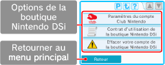

● Relier votre compte Club Nintendo
Si vous êtes titulaire d'un compte
Club Nintendo, vous pouvez relier
l'adresse e-mail que vous avez
enregistrée sur le site de Nintendo
à votre compte de la boutique
Nintendo DSi. Pour visiter le site
de Nintendo, allez à l'adresse
www.nintendo.com/countryselector.
Cela vous permet de bénéficier d'avantages supplémentaires. Pour en savoir plus, visitez le site
www.club-nintendo.com.
● Contrat d’utilisation du Service de la boutique Nintendo DSi
Consultez le contrat d’utilisation du Service de la boutique Nintendo DSi pour obtenir des informations détaillées sur les conditions d’utilisation des services proposés par la boutique Nintendo DSi.
● Effacer votre compte de la boutique Nintendo DSi
Si vous effacez votre compte de la boutique Nintendo DSi, tous vos Nintendo DSi Points et les logiciels téléchargés seront effacés, et vous n'aurez plus la possibilité de télécharger à nouveau les logiciels que vous aviez déjà téléchargés.